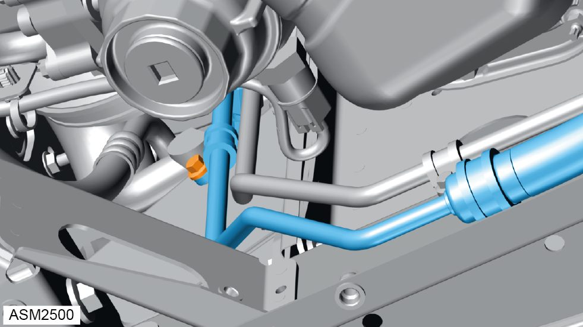

Hose Assembly - Pressure - Rear - V6
Print
Operation Code: 32.03.08-02
Removal
- Remove rear undertray. Refer to procedure.
- Remove rear wheel arch liner - right side.
NOTE: Procedure is the same as for left side component.
- Remove banjo bolt and discard washers (x2) from power steering pump. Torque 45 Nm.
 WARNING: Power steering fluid is a toxic substance and can be lethal if ingested.
WARNING: Power steering fluid is a toxic substance and can be lethal if ingested.
NOTE: Always record quantity and fitted position of shims, washers, locktabs or clips.
NOTE: Drain oil into a suitable container and dispose of appropriately.
- Loosen union nut securing rear hose to centre hose. Torque 45 Nm.
- Disconnect rear hose from centre hose.
WARNING: Power steering fluid is a toxic substance and can be lethal if ingested.
NOTE: Drain oil into a suitable container and dispose of appropriately.

- Remove M6x20 bolt securing rear hose to vehicle. Torque 9 Nm.
- Remove M6x20 bolt securing rear hose to vehicle. Torque 9 Nm.
- Remove rear hose.
Installation
- Installation is the reverse of removal procedure except for the following:
- Renew discarded washers.
- Fill power steering system. Refer to technical data.
- Bleed power steering system. Refer to procedure.